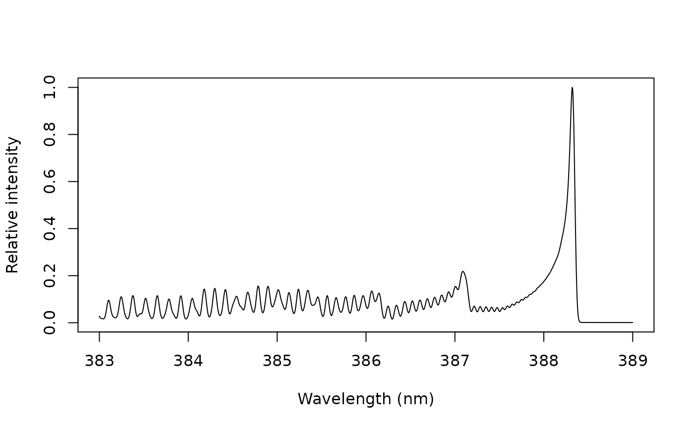

Simulated Emission Spectra of Diatomic Molecules
Source:R/molecular_spectrum.R
molecular_spectrum.RdSimulates the emission spectrum of a diatomic molecule in local thermodynamic equilibrium, from a line list of the ExoMol database, convolved with the instrument profile, to compare with the molecular bands of a measured spectrum.
Usage
molecular_spectrum(
molecule,
temperature = 5000,
wavelength,
resolution = 0.05,
isotopologue = NULL,
dataset = NULL,
units = "energy",
lines = FALSE,
cache = NULL,
timeout = 300
)Arguments
- molecule
The molecule, as named by ExoMol, such as
"CN","C2","OH"or"AlO".- temperature
The temperature, in K. Default is 5000.
- wavelength
A numeric vector of length 2: the wavelength range, in nm.
- resolution
The full width at half maximum of the instrument profile, in nm. Default is 0.05.
- isotopologue
The isotopologue, as in the file names of ExoMol, such as
"12C-14N"or"13C-14N". Default is the first one listed by ExoMol, the most abundant.- dataset
The line list, such as
"MoLLIST-CN". See Details for the default.- units
The units of the intensities:
"energy"(default) or"photons".- lines
A logical: return the lines instead of the convolved spectrum (
FALSE, default).- cache
A directory where the files are kept between sessions. By default (
NULL), the persistent cache of specProc when it is enabled (seedownload_cache()), or a temporary directory for the session.- timeout
The download timeout, in seconds. Default is 300.
Value
A tibble with the wavelength (nm) and the relative intensity
of the spectrum, on a grid of step resolution / 10; with
lines = TRUE, a tibble with one row per line: wavelength (nm),
wavenumber (cm\(^{-1}\)), relative intensity, Einstein coefficient
A (s\(^{-1}\)), energies E_upper and E_lower (cm\(^{-1}\)) and
total angular momenta J_upper and J_lower. The molecule,
isotopologue, line list, temperature and resolution are attributes.
Details
The line list (energy levels and Einstein coefficients of the
rovibronic transitions) is downloaded from ExoMol. In a plasma in LTE at
temperature \(T\), optically thin, the intensity of the line from the
upper level \(u\) (energy \(E_u\), degeneracy \(g_u\)) to the lower
level \(l\) is
$$I \propto g_u A_{ul}\, \nu \exp\left(-\frac{hc E_u}{k_B T}\right)$$
in energy units (without \(\nu\) for photon counts), with the same
temperature for rotation and vibration. The lines are convolved with a
Gaussian profile of full width at half maximum resolution, and the
spectrum is normalized to its maximum in the range.
By default, the empirical MoLLIST line list of Bernath (2020) is used
when ExoMol has one for the most abundant isotopologue (CN, C2, CH, OH,
NH, CaF, MgH, CaH), as they are small (about 1 MB) and their line
positions accurate, and the recommended line list otherwise (AlO:
33 MB). Other line lists are much larger: hundreds of megabytes for TiO,
MgO or CaO. exomol_datasets() lists the line lists of a molecule and
their sizes.
The files are kept for the R session, or on disk to be reused in later
sessions: in the directory cache, or in the persistent cache of specProc
when it is enabled (see download_cache()), where line lists are kept
until the cache is cleared. A molecule whose files are on disk needs no
internet connection when isotopologue and dataset are given. Partition
functions are not needed, as the spectrum is normalized. Wavelengths are
in air between 200 and 2000 nm.
ExoMol data are released under the Creative Commons Attribution-ShareAlike 4.0 license; cite ExoMol and the article of the line list (given on the ExoMol page of the data set) when you use them.
References
Tennyson, J., Yurchenko, S.N., et al. (2020). The 2020 release of the ExoMol database: molecular line lists for exoplanet and other hot atmospheres. Journal of Quantitative Spectroscopy and Radiative Transfer, 255:107228. https://exomol.com
Bernath, P.F. (2020). MoLLIST: molecular line lists, intensities and spectra. Journal of Quantitative Spectroscopy and Radiative Transfer, 240:106687.
Examples
# \donttest{
# needs an internet connection (about 1 MB); gives up after 20 s if ExoMol
# does not answer
cn <- try(molecular_spectrum("CN", temperature = 6000, wavelength = c(383, 389),
timeout = 20))
#> Downloading 12C-14N__MoLLIST-CN.states.bz2 from ExoMol.
#> Downloading 12C-14N__MoLLIST-CN.trans.bz2 from ExoMol (this may take a while for a large line list).
if (!inherits(cn, "try-error")) {
plot(cn$wavelength, cn$intensity, type = "l", xlab = "Wavelength (nm)",
ylab = "Relative intensity")
}

# }